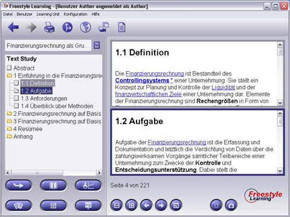

In einigen Fällen wird es Ihnen nützlich erscheinen, Inhalte zweier Elemente des Strukturbaums gleichzeitig angezeigt zu bekommen. Dazu genügt ein Mausklick auf die Schaltfläche zur Bildschirmteilung aus der Interaktionsleiste. Der Anzeigebereich (Content Panel) wird dann in zwei Bereiche geteilt, beide mit dem gleichen Inhalt des zuvor geöffneten Elements. Der primäre Anzeigebereich wird durch eine blaue Umrandung markiert. Der andere, inaktive Bereich wird grau umrandet. Welche Elemente innerhalb der Bereiche angezeigt werden, wird zusätzlich durch eine farbige Markierung im Strukturbaum dargestellt. Wenn Sie ein Element aus dem Strukturbaum (Structure Tree) während des Split Screen Modus auswählen, wird innerhalb des primären Bereichs der gewählte Inhalt des neuen Elementes angezeigt. Der Inhalt des inaktiven Bereichs bleibt bestehen.

Um zwischen den beiden Bereichen zu wechseln, drücken Sie die Schaltfläche "Aktives Fenster wechseln" aus der Interaktionsleiste im unteren Bereich. Die Umrandungsfarben werden getauscht und weitere Selektionen im Strukturbaum werden im ehemals inaktiven Bereich mit nun blauer Umrandung (zur Kennzeichnung des nun aktiven Modus) angezeigt. Es kann beliebig zwischen den Bereichen gewechselt werden.
Zurück zur Hauptseite